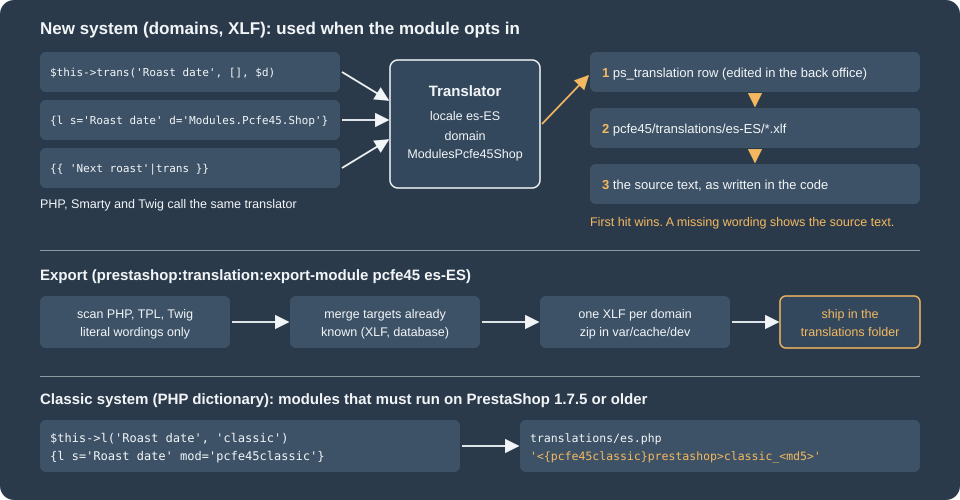

Module Translations
|
This content was generated with the assistance of AI and should be verified against the official documentation before being relied on in production. |
A module that only speaks English is invisible to half of the stores that could use it. PrestaShop ships a translation system for modules, and in 9.x there are two of them side by side: the new system, built on the Symfony translator, with translation domains, XLF files and a database table for the merchant’s own edits, and the classic system, a PHP dictionary file per language that dates back to PrestaShop 1.5. This page explains both, shows how to write wordings in PHP, Smarty and Twig, how the back office and the console export translations, how to ship them inside the module zip, and which mistakes make a wording silently disappear from the translation interface. It was written against PrestaShop 9.2.0 (Symfony 6.4.46, Smarty 4.5.7, Twig 3.27.1, PHP 8.5.12 in the official Docker image) and checked on 2026-10-27. The new system has been available to non-native modules since PrestaShop 1.7.6 and the XLF export since 1.7.8, so everything in the first half of the page also holds for 8.x, with the exceptions listed in Controllers.
The running example is the Pocket Coffee shop with Spanish as the default language and English as the second one. The
module pcfe45 prints a roast-date badge on the product page, has a front page called "How we roast" and a small back
office page called "Roast schedule", and every string on those three screens exists in Spanish and English. A second
module, pcfe45classic, shows the same badge with the classic system. Both modules were installed in a PrestaShop
9.2.0 Docker container with the Spanish language pack added, and every command and output on this page comes from that
shop. The sections What was run and what was not and Exporting translations list exactly
what was exercised. This page builds on Module Basics (module structure,
the main class, config.xml) and on Hooks; the admin controller used here is
covered in depth in Module Services and Admin
Controllers, and the front controller in Front
Controllers and Templates.

Two systems, one decision
Both systems turn a wording (the English sentence in the code) into the text shown for the current language. They differ in where the translation lives and how a wording is grouped for translators.
| Classic system | New system | |
|---|---|---|
Available since |
PrestaShop 1.6 and earlier (it is the heritage system) |
PrestaShop 1.7.6 for non-native modules; XLF export since 1.7.8 |
Grouping of wordings ("context") |
The file where the wording appears: the second argument of |
The translation domain: |
Where translations are stored |
|
XLF (XLIFF 1.2) files in |
Method in PHP |
|
|
Tag in Smarty |
|
|
Filter in Twig |
Not available |
|
Symfony controllers |
Not supported |
Supported |
Export from the console and the back office |
Copy the file from the module folder |
|
Variable replacement |
|
Named tokens ( |
The choice is mostly decided by two facts. A module that only has to run on 1.7.5 or older must use the classic system;
a module with Symfony controllers or Twig templates must use the new one. Everything written for PrestaShop 9 can use
the new system and nothing else: this is also the only system the console can export. The classic system stays in 9.2.0
because 1.6 and 1.7 modules still use it (the l() method delegates to Translate::getModuleTranslation, which reads
the dictionary files), but no new module needs it. A module that was
translated with the classic system can move to the new one without losing its translations, because the Translations
page of the back office reads the old dictionary files as one of its sources.
The new system
Translation domains
Every wording of the new system belongs to at least one translation domain, a dotted name made of three parts. The same sentence can be translated differently in two domains, which is how translators get context (the English "Order" is a noun in a button and a verb in a menu).
| Part | Rule |
|---|---|
First |
Always |
Second |
The technical name of the module with the first letter upper case and the rest lower case: |
Third |
Free, first letter upper case, the rest lower case. Dots, dashes and underscores are accepted but discouraged. From 1.7.8 the native-module convention is |
The domain Modules.Pcfe45.Shop is stored on disk without dots: the file is called ModulesPcfe45Shop.es-ES.xlf and the
database column ps_translation.domain holds ModulesPcfe45Shop. A module that wants to reuse classic dictionaries must
name the third part after the file where the wording appears (the file name with the first letter upper case, without
.tpl, and without a trailing "controller"), so that the keys of both systems line up:
| File where the wording is used | Domain that finds the classic translation |
|---|---|
|
|
|
|
|
|
|
|
A brand-new module has no classic dictionary to honour and should use the Admin and Shop convention instead, as
Pocket Coffee does. The core’s own domains (Admin.Actions, Shop.Theme.Global) follow a different, deeper scheme;
a module wording that is generic enough ("Settings updated") can use one of them instead of creating a duplicate.
Opting in
A module appears under "Installed modules translations" in the back office, and is exportable from the console, only when
isUsingNewTranslationSystem() returns true. The method exists on Module in 9.2.0: its default implementation looks at
the translator catalogue and returns true when any loaded domain starts with the module’s base domain
(ModulesPcfe45), which means a module that already ships XLF files is detected automatically. Declaring the method
makes the decision explicit and keeps a module without XLF files (as in the first release) in the new system.
<?php
/**
* Pocket Coffee roast badge: shows the roast date of the beans on the product page.
*/
if (!defined('_PS_VERSION_')) {
exit;
}
if (file_exists(__DIR__ . '/vendor/autoload.php')) {
require_once __DIR__ . '/vendor/autoload.php';
}
class Pcfe45 extends Module
{
public function __construct()
{
$this->name = 'pcfe45';
$this->tab = 'front_office_features';
$this->version = '1.0.0';
$this->author = 'Pocket Coffee';
$this->need_instance = 0;
$this->ps_versions_compliancy = ['min' => '9.0.0', 'max' => '9.99.99'];
$this->bootstrap = true;
parent::__construct();
$this->displayName = $this->trans('Roast date badge', [], 'Modules.Pcfe45.Admin');
$this->description = $this->trans(
'Shows when the beans were roasted. Made by %author%, version %version%.',
['%author%' => $this->author, '%version%' => $this->version],
'Modules.Pcfe45.Admin'
);
}
/**
* Opt in to the Translations page of the back office (Installed modules translations).
*/
public function isUsingNewTranslationSystem(): bool
{
return true;
}
public function install(): bool
{
return parent::install()
&& $this->registerHook('displayProductAdditionalInfo')
&& Configuration::updateValue('PCFE45_ROAST_DATE', '2026-10-20');
}
public function uninstall(): bool
{
return Configuration::deleteByName('PCFE45_ROAST_DATE') && parent::uninstall();
}
public function hookDisplayProductAdditionalInfo(array $params): string
{
$this->context->smarty->assign([
'roastDate' => Configuration::get('PCFE45_ROAST_DATE'),
'beansLeft' => 12,
]);
return $this->fetch('module:pcfe45/views/templates/hook/badge.tpl');
}
}Writing wordings in PHP
The module class extends Module, which has a protected method trans($id, array $parameters = [], $domain = null, $locale = null). It forwards to Context::getContext()->getTranslator(). Because it is protected it can only be called
from inside the module class (as in the constructor above); any other class must obtain the translator itself. The four
arguments are:
-
$id: the wording, as a string literal in English. It is also the fallback text. -
$parameters: an array of replacements such as['%author%' => $this->author]. The tokens are replaced after the translation is found, so each language can reorder them. There is no special token syntax:%name%is the convention,[link]also works. -
$domain: the domain,Modules.Pcfe45.Admin. Always pass it: it is what ties the wording to the module’s files. -
$locale: an optional locale such ases-ES, to translate into a language other than the current one (an email sent in the customer’s language, for example).
The result of trans() is not HTML-escaped in 9.x (the 9.0 release dropped the escaping that older versions
applied). A translation stored as Tostado <b>x</b> & y's was printed by the product page exactly like that, tags
included, so the translation is trusted markup: escape values you insert into a token, and treat the text of the
translation files and of the ps_translation table as HTML written by someone you trust. The classic l() still
escapes by default, which is why its output shows roaster's in the example below.
Controllers
A legacy ModuleFrontController or ModuleAdminController reaches the module through $this->module, and the module
exposes the translator through the public getTranslator():
<?php
if (!defined('_PS_VERSION_')) {
exit;
}
class Pcfe45BadgeModuleFrontController extends ModuleFrontController
{
public function initContent(): void
{
parent::initContent();
$translator = $this->module->getTranslator();
$this->context->smarty->assign([
'pageTitle' => $translator->trans('How we roast', [], 'Modules.Pcfe45.Shop'),
'intro' => $translator->trans(
'Small batches, roasted on %day% and shipped within 48 hours.',
['%day%' => Configuration::get('PCFE45_ROAST_DATE')],
'Modules.Pcfe45.Shop'
),
]);
$this->setTemplate('module:pcfe45/views/templates/front/badge.tpl');
}
}A Symfony back office controller calls its own $this->trans(). This is where PrestaShop 9 and 8 differ, and a wrong
guess silently produces an English page. The 9.x base class PrestaShopAdminController uses the standard Symfony
signature trans(string $id, array $parameters = [], ?string $domain = null, ?string $locale = null). The deprecated
FrameworkBundleAdminController of 8.x, which is still present in 9.2.0 and removed in 10.0, takes the domain second:
trans($key, $domain, array $parameters = []). A module that must run on both versions cannot share one call; give
each version its own controller class, or route the call through a helper that detects the signature.
Service classes receive the translator through autowiring. The Symfony TranslatorInterface is available in the
back-office container, so a service can ask for it in its constructor; in the front office the light container does not
provide translator, so a class used there receives the module’s translator from the main class instead
(new RoastLabel($this->getTranslator())).
<?php
declare(strict_types=1);
namespace PrestaShop\Module\Pcfe45;
use Symfony\Contracts\Translation\TranslatorInterface;
class RoastLabel
{
public function __construct(private readonly TranslatorInterface $translator)
{
}
public function forBatch(int $kg): string
{
return $this->translator->trans('Batch of %kg% kg', ['%kg%' => $kg], 'Modules.Pcfe45.Admin');
}
}<?php
declare(strict_types=1);
namespace PrestaShop\Module\Pcfe45\Controller;
use PrestaShop\Module\Pcfe45\RoastLabel;
use PrestaShopBundle\Controller\Admin\PrestaShopAdminController;
use Symfony\Component\HttpFoundation\Response;
class RoastController extends PrestaShopAdminController
{
public function indexAction(RoastLabel $label): Response
{
return $this->render('@Modules/pcfe45/views/templates/admin/roast.html.twig', [
'layoutTitle' => $this->trans('Roast schedule', [], 'Modules.Pcfe45.Admin'),
'batchSize' => 12,
'batchLabel' => $label->forBatch(12),
]);
}
}services:
_defaults:
public: false
autowire: true
autoconfigure: true
PrestaShop\Module\Pcfe45\RoastLabel: ~
PrestaShop\Module\Pcfe45\Controller\RoastController: ~pcfe45_roast:
path: /pcfe45/roast
methods: [GET]
defaults:
_controller: 'PrestaShop\Module\Pcfe45\Controller\RoastController::indexAction'
_legacy_controller: AdminPcfe45
_legacy_link: AdminPcfe45Writing wordings in templates
Smarty uses the {l} tag with the parameter d for the domain, and optionally sprintf with an array of tokens. The
tag is evaluated after the translation is found, so the tokens may move around in the target language:
<div class="pcfe45-badge">
<strong>{l s='Roast date' d='Modules.Pcfe45.Shop'}</strong>
{l s='Roasted on %date%' sprintf=['%date%' => $roastDate] d='Modules.Pcfe45.Shop'}
<a href="{$link->getModuleLink('pcfe45', 'badge')|escape:'html':'UTF-8'}">{l s='How we roast' d='Modules.Pcfe45.Shop'}</a>
</div>Twig uses the trans filter. Its first argument is the token map and the second the domain; trans_default_domain
sets a default domain for the whole file (it applies per file, so a template that extends a layout needs its own
declaration). All three wordings below are extracted by the export, with the default domain and with the explicit one:
{% trans_default_domain 'Modules.Pcfe45.Admin' %}
{% extends '@PrestaShop/Admin/layout.html.twig' %}
{% block content %}
<div class="card">
<h3 class="card-header">{{ 'Next roast'|trans }}</h3>
<div class="card-body">
<p>{{ 'Batch size: %kg% kg'|trans({'%kg%': batchSize}) }}</p>
<p>{{ batchLabel }}</p>
<p>{{ 'Only literals are extracted'|trans({}, 'Modules.Pcfe45.Admin') }}</p>
</div>
</div>
{% endblock %}The back office page was fetched with the shop language of the employee set to Spanish and to English. The English page prints "Next roast", "Batch size: 12 kg" and "Batch of 12 kg"; the Spanish page prints "Próximo tostado", "Tamaño del lote: 12 kg" and "Lote de 12 kg", taken from the XLF files shown below. In the front office the product page of a Spanish visitor prints "Fecha de tostado" and "Tostado el 2026-10-20", and the English page the original sentences.
How a wording is found at runtime
The translator holds one catalogue per locale. It is filled from, in decreasing priority:
-
The rows of the table
ps_translationfor the language, domain and wording, which is where the "Modify translations" form of the back office writes. -
The XLF files of the module:
modules/pcfe45/translations/es-ES/ModulesPcfe45Shop.es-ES.xlfand the other domain files. They are read directly from the module folder at runtime; nothing is imported into the database when the module is installed or upgraded. -
The wording itself. A missing translation never fails, it shows the English source.
The order was checked by inserting a row Roast date / Tostado (BD) for language 2 into ps_translation with the
domain ModulesPcfe45Shop and no theme: the product page immediately showed "Tostado (BD)" instead of "Fecha de
tostado" from the XLF file, and went back to the XLF text when the row was deleted (the translator catalogue is cached
under var/cache, so the first request after a database change can still show the old text; clear the cache with
bin/console cache:clear). A merchant’s edit therefore always wins over the developer’s file, and a module update that
changes the XLF will not overwrite it.
-- one row per (language, domain, wording); theme is NULL for modules
INSERT INTO ps_translation (id_lang, `key`, translation, domain, theme)
VALUES (2, 'Roast date', 'Tostado (BD)', 'ModulesPcfe45Shop', NULL);Translating in the back office
With isUsingNewTranslationSystem() returning true, the merchant (or you, for the first draft) opens International >
Translations, picks Modify translations, chooses the type "Installed modules translations", selects the module and the
destination language, and clicks "Modify". The language must be installed in the shop first. The page lists the
wordings of the module grouped by domain; untranslated ones are highlighted. The form is filled from the code scan
described below, and saving writes ps_translation rows. Pocket Coffee installed the Spanish pack with the console
helper Language::downloadAndInstallLanguagePack (it needs a booted Symfony kernel to complete the multilingual tables);
in a real shop the same is done from International > Localization. The back office form itself was not driven in this
verification (it needs a browser session); the database rows it produces were written by hand as shown above.
Making wordings discoverable
The scan analyses the source code of the module, so a wording has to be a literal in a PHP, TPL or Twig file. It is
found whether or not the code ever runs. The scan understands trans(...) calls, the {l} tag and the trans Twig
filter. Anything dynamic is ignored. The following class, added temporarily to the module, was exported to see what
survives:
<?php
class Pcfe45Pitfalls extends Pcfe45
{
public function demo(string $var): array
{
$wording = 'Variable wording';
$domain = 'Modules.Pcfe45.Shop';
return [
$this->trans('Literal wording', [], 'Modules.Pcfe45.Shop'),
$this->trans($wording, [], $domain),
$this->trans('Concatenated ' . $var . ' wording', [], 'Modules.Pcfe45.Shop'),
$this->trans('Bad domain wording', [], 'Modules.Pcfe45'),
];
}
}The exported Modules.Pcfe45.Shop file contained "Literal wording" and nothing else from the class: the variable
wording and the concatenated one were silently dropped, and no error or warning is printed. The call with the
two-part domain Modules.Pcfe45 was exported, but into a new file named ModulesPcfe45.es-ES.xlf, which is rarely what
you want. The rules that follow from this:
-
Pass literals only: one literal wording, one literal domain.
-
Put dynamic parts into placeholders (
['%kg%' => $kg]), never into the string. -
Do not wrap
trans()in a helper that takes the wording as an argument: the scan sees the helper call, not the wording. -
Translate a fixed list of options by listing each wording explicitly, even if the code then selects one by key.
At runtime a dynamic wording is still translated if the XLF happens to contain it, so a hand-written entry works; it just never appears in the translation form or the export.
Exporting translations
The back office export (International > Translations > Export translations, type "Installed modules translations", choose the module and the language) downloads a zip. The console command does the same without a browser and, unlike the back office, can export all languages at once:
# one locale (en-US or just en are both accepted)
bin/console prestashop:translation:export-module pcfe45 es-ES
# every installed locale: one zip per locale
bin/console prestashop:translation:export-module pcfe45
# write the files straight into modules/pcfe45/translations/
bin/console prestashop:translation:export-module pcfe45 es-ES --auto-installRun on the shop it printed:
Exporting translations for module "pcfe45" in locale "es-ES"... Module translations have been exported successfully: /var/www/html/var/cache/dev/admin/export/translations_export_pcfe45_es-ES.zip
and, without a locale, Successfully exported 2 out of 2 locales for module "pcfe45" with two zips
(translations_export_pcfe45_en-US.zip and translations_export_pcfe45_es-ES.zip). With --auto-install the command
also prints "Translations have been installed to the module directory." and creates the missing XLF files in
modules/pcfe45/translations/es-ES/. Three facts are worth knowing:
-
The command is called
prestashop:translation:export-modulein 9.2.0. The 9.1 changelog calls itprestashop:module:export-translations; that name does not exist. -
It refuses a module that does not use the new system: for the classic
pcfe45classicit stops with "Module "pcfe45classic" does not use the new translation system (XLF files). Only modules using the new translation system can be exported with this command." -
The export merges what is already known. A first export of
pcfe45listed every wording with the English text as target; after the Spanish targets were saved intranslations/es-ES/, a second export returned the Spanish text for the old wordings and the English text for the new ones, so the loop "write code, export, translate, copy back" is safe to repeat.
The zip holds one XLF 1.2 file per domain in a folder per locale:
<?xml version="1.0" encoding="UTF-8"?>
<xliff xmlns="urn:oasis:names:tc:xliff:document:1.2" version="1.2">
<file original="ModulesPcfe45Shop.xlf" source-language="es-ES" target-language="es-ES" datatype="plaintext">
<body>
<trans-unit id="2f6e1b132d53dd8a22c9c65249709833">
<source>How we roast</source>
<target>Cómo tostamos</target>
</trans-unit>
<trans-unit id="d1405b292497597ae424b067e7b1aae3">
<source>Roast date</source>
<target>Fecha de tostado</target>
</trans-unit>
<trans-unit id="ed6e716accaf504365865db2b4c852de">
<source>Roasted on %date%</source>
<target>Tostado el %date%</target>
</trans-unit>
<trans-unit id="621bf7e4634dc77ef83e2bb61d3f7f18">
<source>Small batches, roasted on %day% and shipped within 48 hours.</source>
<target>Lotes pequeños, tostados el %day% y enviados en menos de 48 horas.</target>
</trans-unit>
</body>
</file>
</xliff>The id of a unit is the MD5 hash of the source text (md5('Roast date') is d1405b29...), which is the same hash the
classic system uses in its keys. A hand-written file must use the correct hash or the unit is ignored. The source
text is what the code passes to trans(), parameters included, so a wording with a token keeps the token in the target
(%date% must stay %date%). The exporter writes the target locale in both source-language and target-language;
this is how 9.2.0 writes the file. bin/console lint:xliff modules/pcfe45 validates the files
("All 2 XLIFF files contain valid syntax" for the Pocket Coffee set).
The distribution layout is:
pcfe45/
├── pcfe45.php
├── config/
│ ├── routes.yml
│ └── services.yml
├── controllers/front/badge.php
├── src/
│ ├── Controller/RoastController.php
│ └── RoastLabel.php
├── translations/
│ ├── index.php
│ └── es-ES/
│ ├── index.php
│ ├── ModulesPcfe45Admin.es-ES.xlf
│ └── ModulesPcfe45Shop.es-ES.xlf
└── views/templates/
├── admin/roast.html.twig
├── front/badge.tpl
└── hook/badge.tplLocale folders use the IETF form (es-ES, en-US) in the new system and the two-letter ISO code (es.php) in the classic
one. Resetting the module (bin/console prestashop:module reset pcfe45) with the XLF files in place immediately showed
the Spanish text on the product page, so no import step is needed. The folder is named after the locale of the
language, so a module ships one folder per locale it supports and shows the English text for every other one.
A short workflow that works for a new module:
-
Write the code with English literals and the domains
AdminandShop. -
Install the module and translate it once in the back office (or skip this and edit the exported files).
-
Run the export for each language you ship.
-
Translate the
targetvalues in the XLF files and copy the files intotranslations/<locale>/. -
Run
lint:xliffon the module and commit the files. -
When the code changes, repeat the export; new wordings come out with the English text as target.
The classic system
The classic system has the same two steps (a call in the code, a dictionary file) and remains fully supported in 9.2.0
for modules that target 1.6 and 1.7.0 to 1.7.5. In PHP the module has $this->l($wording, $specific = false, $locale
= null); in a controller it is $this->module->l('...', 'filename'); in Smarty it is the tag with the parameter
mod:
<?php
if (!defined('_PS_VERSION_')) {
exit;
}
class Pcfe45classic extends Module
{
public function __construct()
{
$this->name = 'pcfe45classic';
$this->tab = 'front_office_features';
$this->version = '1.0.0';
$this->author = 'Pocket Coffee';
$this->need_instance = 0;
$this->ps_versions_compliancy = ['min' => '1.7.0', 'max' => '9.99.99'];
parent::__construct();
$this->displayName = $this->l('Classic roast badge');
$this->description = $this->l('Roast date badge using the classic translation system.');
}
public function install()
{
return parent::install() && $this->registerHook('displayProductAdditionalInfo');
}
public function hookDisplayProductAdditionalInfo($params)
{
$this->context->smarty->assign('sentence', $this->l("Fresh from the roaster's drum", 'pcfe45classic'));
return $this->display(__FILE__, 'views/templates/hook/classic.tpl');
}
}<div class="pcfe45classic">
<strong>{l s='Roast date' mod='pcfe45classic'}</strong>
{l s='Roasted on %s' sprintf=['2026-10-20'] mod='pcfe45classic'} - {$sentence|escape:'html':'UTF-8'}
</div>The second argument of l() is the context: by convention the name of the PHP file. If it is omitted, the module’s
technical name is used. In templates the context is the template file name without the extension and in lower case
(classic.tpl gives classic), so templates are contextualised automatically. Context only matters when the same wording
needs two translations.
The dictionary is translations/<iso>.php (es.php), a PHP file that fills the global $_MODULE. The back office
form writes it, but a developer can also write it by hand. Each key is built as follows, and the formula was checked
against the shop with the generator below:
<?php
// key = lower-case "<{module}prestashop>" + context, then "_" and md5 of the wording
// (an apostrophe is escaped with a backslash before hashing)
function pcfeKey(string $module, string $context, string $wording): string
{
return strtolower('<{' . $module . '}prestashop>' . $context)
. '_' . md5(preg_replace("/\\\*'/", "\'", $wording));
}
echo "<?php\n\nglobal \$_MODULE;\n\$_MODULE = array();\n";
foreach ([
['pcfe45classic', 'Classic roast badge', 'Insignia de tostado clásica'],
['pcfe45classic', "Fresh from the roaster's drum", 'Recién salido del tambor del tostador'],
['classic', 'Roast date', 'Fecha de tostado'],
['classic', 'Roasted on %s', 'Tostado el %s'],
] as [$context, $wording, $translation]) {
echo '$_MODULE[\'' . pcfeKey('pcfe45classic', $context, $wording) . '\'] = \'' . addcslashes($translation, "'") . "';\n";
}The generated translations/es.php starts with:
<?php
global $_MODULE;
$_MODULE = array();
$_MODULE['<{pcfe45classic}prestashop>pcfe45classic_925c1df08fe9e241bd63b24e9b098d96'] = 'Insignia de tostado clásica';
$_MODULE['<{pcfe45classic}prestashop>classic_d1405b292497597ae424b067e7b1aae3'] = 'Fecha de tostado';
$_MODULE['<{pcfe45classic}prestashop>classic_ca7324c6ef56bce7803a3aade00ed3e4'] = 'Tostado el %s';With these files the Spanish product page printed "Fecha de tostado" and "Tostado el 2026-10-20 - Recién salido del
tambor del tostador"; the English page printed Fresh from the roaster's drum, because l() escapes. The lookup in
Translate::getModuleTranslation also tries a key built with the current theme name (<{module}hummingbird>), so a
theme can ship its own modules/<module>/translations/es.php that overrides the module’s, and for a context ending in
"controller" it tries the key without that suffix first. Sprintf markers (%s, %1$s) or named tokens
(sprintf=['[link]' => '<a href=...>', '[/link]' => '</a>']) are filled after the translation is found; HTML placed in a
token is not escaped, so a link inside a sentence is built from tokens rather than from concatenated strings, and the
translator must keep the tokens.
Everything that is generated is deliberately a legacy format. The Translations page of the back office still reads and writes classic dictionaries for a classic module, but nothing exports them as XLF, and the md5 keys make the files painful to review. A module that supports only 9.x should not choose this system.
Gotchas
-
A domain that does not match the module (a technical name with an underscore, a misspelled third part) raises no error in the code: the translation is simply not found and the wording stays in English.
-
trans()takes the domain third in PHP and in the 9.x admin controller, second in the deprecated 8.x controller. -
The translator catalogue is cached. After editing an XLF file or a
ps_translationrow, clear the cache. -
The scan reads the code; it does not run it. A string built at runtime does not exist for the translation interface.
-
Edits made by the merchant live in the database, not in the module folder, so exporting the module’s XLF files from another shop does not include them. Use the back office export on the shop where the edits were made.
-
In the front office the light container has no
translatorand norouterservice, so a class constructed in a hook must receive the module’s translator from the main class. -
Module::trans()is protected; calling$module->trans()from another class is a fatal error. UsegetTranslator()->trans(). -
A module technical name with an underscore, such as a
ps_core module, needs the prefix removed in the domain (ps_featuredproductsbecomesModules.Featuredproducts.Shop).
What was run and what was not
The following was executed on PrestaShop 9.2.0 in Docker (shop language Spanish and English):
-
Installation of
pcfe45andpcfe45classicwithbin/console prestashop:module install, andmodule resetafter adding the XLF files. -
The product page of a Spanish and an English visitor, the front page
module/pcfe45/badge, and the back office pagemodules/pcfe45/roastwith the employee language set to each language. -
The export in the three forms shown (one locale, all locales,
--auto-install), the refusal for a classic module, the merge of existing targets, and the pitfall class above. -
lint:xliff,lint:twig,lint:yamlandphp -lon the module. -
The
ps_translationprecedence test and the classic key generator.
Not run: the "Modify translations" form and the back office export button (both need a browser session), the
Crowdin-based translation of the core, translation of mail templates and PDF templates, and a module with
the 8.x FrameworkBundleAdminController (the class is present in 9.2.0 but no 8.x shop was started).